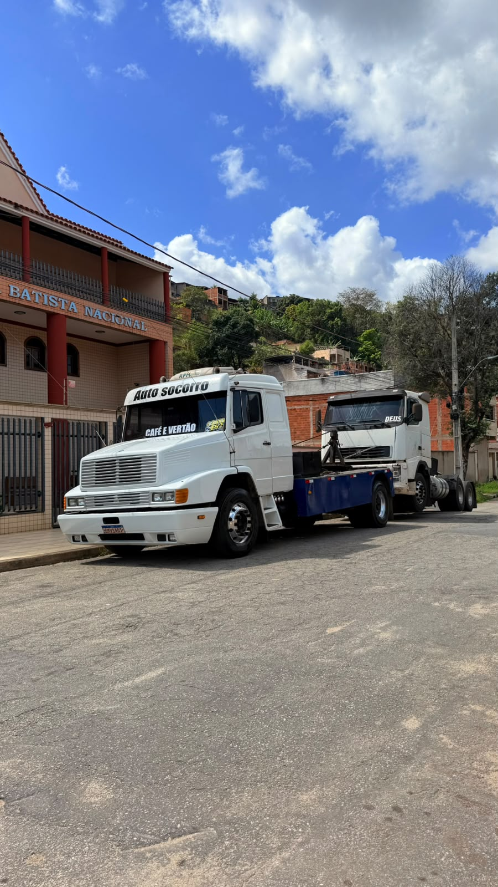
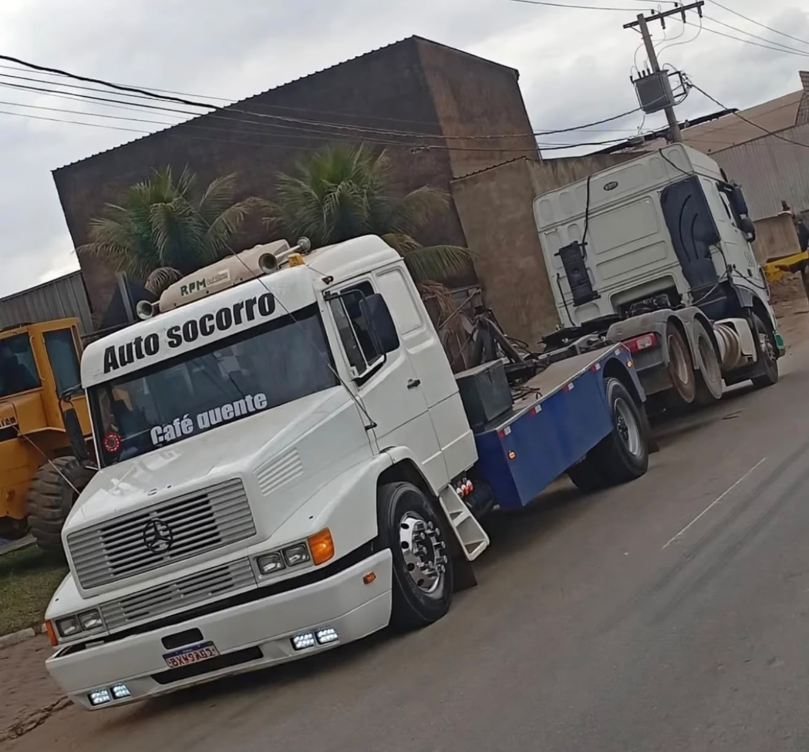

AUTO SOCORRO • REBOQUE • 24 HORAS
GUINCHO EM
TIMÓTEO – MG
AUTO SOCORRO 24H
Reboque pesado, extra pesado, mega pesado e destombamento. Com base em Timóteo (MG), avaliamos o atendimento após receber sua localização e os dados do veículo.
O QUE FAZEMOS
NOSSOS SERVIÇOS
Soluções em reboque e auto socorro para situações que exigem estrutura, agilidade e segurança.
Reboque pesado
Avaliação de remoção e transporte de veículos pesados.
Conhecer o serviço →Reboque extra pesado
Planejamento para demandas de maior porte e complexidade.
Conhecer o serviço →Reboque mega pesado
Solicitações especiais avaliadas caso a caso.
Conhecer o serviço →Destombamento
Avaliação técnica para recuperação de veículos tombados.
Conhecer o serviço →Reboque de veículos
Remoção de veículos conforme as condições da ocorrência.
Conhecer o serviço →Guincho 24 horas
Solicite atendimento emergencial a qualquer hora.
Conhecer o serviço →24H
ESTAMOS PRONTOS
PRECISOU?
CHAME AGORA!
Atendimento 24 horas para você continuar sua viagem com segurança.
Solicitar auto socorro
QUEM SOMOS
AUTO SOCORRO CAFÉ
O Auto Socorro Café oferece soluções em reboque e auto socorro com foco em agilidade, segurança e responsabilidade. Nossa estrutura está preparada para atender diferentes necessidades, desde operações de reboque até serviços envolvendo veículos pesados.
- Atendimento ágil
- Segurança
- Equipamentos adequados
- Equipe especializada
- Disponibilidade 24 horas
24HAtendimento
03Contatos da empresa
06Serviços apresentados
PRONTOS PARA A ESTRADA
NOSSA ESTRUTURA
BASE EM TIMÓTEO • MG
GUINCHO EM TIMÓTEO
O Auto Socorro Café tem base na Avenida Pinheiro, 274 A, no bairro Limoeiro, com atendimento presencial e auto socorro 24 horas. Em Timóteo, recebe solicitações de guincho, reboque de veículos, reboque pesado, extra pesado, mega pesado e destombamento. A equipe avalia cada ocorrência antes de confirmar o serviço.
Como solicitar guincho em Timóteo?
Ligue para (31) 99785-6734 ou envie a localização pelo WhatsApp. Informe o tipo de veículo, o que aconteceu, as condições de acesso e o destino desejado. Fotos ajudam na avaliação.
Quais veículos podem ser atendidos?
O site apresenta reboque de veículos e operações com veículos pesados, incluindo caminhões mostrados nas fotografias. O método de remoção depende do porte, da condição do veículo e do acesso ao local.
Como funciona o orçamento?
Após receber os dados da ocorrência, a equipe verifica disponibilidade, recursos necessários e condições de deslocamento antes de informar o orçamento. Para outras localidades, confirme a cobertura no primeiro contato.
BASE EM TIMÓTEO • MG
ONDE ESTAMOS
Avenida Pinheiro, 274 ALimoeiro, Timóteo – MG
CEP 35181-402
Atendimento presencial e auto socorro 24 horas. Para solicitar deslocamento, envie sua localização e consulte a disponibilidade para a ocorrência.
AUTO SOCORRO CAFÉ
ONDE VOCÊ ESTIVER,
NÓS CHEGAMOS.
Mais que reboque. É parceria na estrada.
Solicitar auto socorro